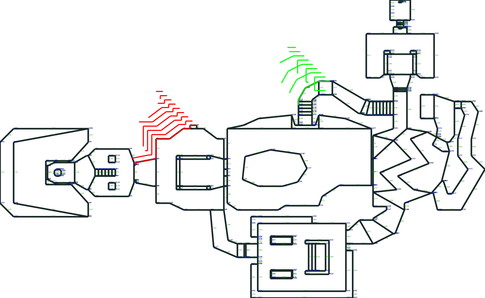

Stephan van Ellewee
Who I am
import sqlite3SQLite is also..
import sqlite3
with sqlite3.connect(":memory:") as conn:
# some database creation..
conn.execute("CREATE TABLE SomeTable (id, Name)");
cursor = conn.execute("""
INSERT INTO SomeTable (id, Name)
VALUES (?, ?)
""", (12, "Stephan"))
# after contextmanager database disappears
Note, the lack of required types
import sqlite3
# creates some_file.db on HDD
with sqlite3.connect("some_file.db") as conn:
# some database creation..
conn.execute("CREATE TABLE SomeTable (id, Name)");
cursor = conn.execute("""
INSERT INTO SomeTable (id, Name)
VALUES (?, ?)
""", (12, "Stephan"))
# after contextmanager database PERSISTS!
import sqlite3
with sqlite3.connect("demo.db") as conn:
# enable foreign key constraints
conn.execute("PRAGMA foreign_keys=ON")
# some database creation..
conn.execute("CREATE TABLE SomeTable (id PRIMARY KEY, name);")
# some database changes
example:
SQLite (et al) supports Common Table Expressions (CTE's)
WITH demo_0 AS (SELECT *
FROM runs
WHERE fileName = 'demo_0_250000.csv')
SELECT * FROM demo_0;
WITH demo_0 AS (SELECT *
FROM runs
WHERE fileName = 'demo_0_250000.csv'),
sqlite3_results AS (SELECT *
FROM demo_0
INNER JOIN results
ON results.idRun=demo_0.idRun
WHERE demo_0.pyTest='sqlite3_01.py'),
simple_results AS (SELECT *
FROM demo_0
INNER JOIN results ON results.idRun=demo_0.idRun
WHERE demo_0.pyTest='simple.py'),
sizes AS (SELECT (SELECT COUNT(1)
FROM sqlite3_results) size1 ,
(SELECT COUNT(1)
FROM simple_results) size2)
SELECT * from sizes; -- use anything above ^
WITH RECURSIVE fibo (num, next_num) AS (
VALUES (0, 1) -- initial state
UNION ALL
SELECT -- what happens next
fibo.next_num,
fibo.next_num + fibo.num
FROM fibo -- recursion!
)
SELECT num FROM fibo LIMIT 10
results in 0,1,1,2,3,5,8,13,21,34
Go down a hierarchy with CTE's
CREATE TABLE IF NOT EXISTS org (
name TEXT PRIMARY KEY,
boss TEXT REFERENCES org
) ;
INSERT INTO org VALUES('Alice',NULL);
INSERT INTO org VALUES('Bob','Alice');
INSERT INTO org VALUES('Cindy','Alice');
INSERT INTO org VALUES('Dave','Bob');
INSERT INTO org VALUES('Emma','Bob');
INSERT INTO org VALUES('Fred','Cindy');
INSERT INTO org VALUES('Gail','Cindy');
Go down a hierarchy with CTE's
Who works for Alice?
WITH RECURSIVE works_for_alice(name, level) AS (
VALUES ('Alice', 0)
UNION ALL
SELECT org.name, under_alice.level + 1
FROM org
JOIN under_alice
ON org.boss = works_for_alice.name
)
SELECT substr('..........', 1, level * 3) || name
FROM works_for_alice;
Results in
| Alice |
| ...Bob |
| ...Cindy |
| ......Dave |
| ......Emma |
| ......Fred |
| ......Gail |
Summary: SQLite has Great SQL support
in terms of
Convenient Python libs:
Batteries included
import collections
Pixel = collections.namedtuple("Pixel","x y colour")
new_pixel = Pixel._make([10, 20, "RED"])
new_pixel.x # 10, same as new_pixel[0]
new_pixel.colour # "RED"
import struct
byte_list = struct.unpack("<hhh", binary_string)
another_pixel = Pixel._unpack(byte_list)
# use new_pixel, another_pixel
Parse Vertex binary data/lump
byte_list = struct.unpack("<hh", byte_data)
Vertex = collections.namedtuple("Vertex", "vertex_id x y")
Parse Line binary data/lump
byte_list = struct.unpack("<hhhhhhh", byte_data)
Line = collections.namedtuple("Line", "line_id v1 v2...")
Store all WAD data into a SQLite db
CREATE TABLE IF NOT EXISTS Vertex(
vertex_id INTEGER PRIMARY KEY,
x, y INTEGER
);
CREATE TABLE IF NOT EXISTS Line(
line_id INTEGER PRIMARY KEY,
v1 INTEGER,
v2 INTEGER,
FOREIGN KEY(v1) REFERENCES Vertex (vertex_id),
FOREIGN KEY(v2) REFERENCES Vertex (vertex_id)
);
Using SQL you can create very powerful queries
Bounds Checking
Box = collections.namedtuple("Box",
"min_x min_y width height")
def get_level_bounding_box(conn):
"""
Postion view window to fit all points
"""
cursor = conn.execute("""
SELECT
MIN(x),
MIN(y),
MAX(x) - MIN(x) as width,
MAX(y) - MIN(y) as height
FROM Vertex
""")
return Box._make(cursor.fetchone())
Line drawing
Vertex = collections.namedtuple("Vertex", "vertex_id x y")
def get_lines(conn):
cursor = conn.execute("""
SELECT
ld.line_id, -- line reference
v1.vertex_id, v1.x, v1.y, -- vertex 1
v2.vertex_id, v2.x, v2.y -- vertex 2
FROM Line ld
INNER JOIN Vertex v1 ON v1.vertex_id=ld.v1
INNER JOIN Vertex v2 ON v2.vertex_id=ld.v2;
""")
def unpack(result):
line_id, *vertexes = result
v1 = Vertex._make(vertexes[:3])
v2 = Vertex._make(vertexes[3:])
return line_id, v1, v2
yield from (unpack(result) for result in cursor)
some_binary_data = ...
conn.execute("""
CREATE TABLE BinaryStuff (
stuff_id INTEGER PRIMARY KEY AUTOINCREMENT,
name TEXT,
some_binary_data BLOB -- BINARY DATA!
)
""")
conn.execute("""
INSERT INTO BinaryStuff ( name, some_binary_data )
VALUES (?)
""", (name, sqlite3.Binary(some_binary_to_insert))
We have a feed CSV file
idProduct, idSupplier
543556, 391595
543556, 630810
543556, 554876
543556, 1338545
543556, 1436332
543556, 1667998
543556, 1850857
543556, 274867
543556, 1819135
@contextlib.contextmanager
def get_datastore():
yield collections.defaultdict(set)
def get_suppliers_for_product(conn):
return conn.items()
def main(code_name, file_name):
# Just a plain dictionary of set-values
with get_datastore() as conn:
do_csv_parse(conn, file_name)
for product, supplier in get_suppliers_for_product(conn):
output_phase(product, supplier)
def do_csv_parse(conn, file_name):
lookup = conn # to match the SQL api
with open(file_name, "r") as stockfile:
reader = csv.DictReader(stockfile)
for row in reader:
# Not Lazy
lookup[row['idProduct']].add(row['idSupplier'])
Process CSV and add into dictionary
CREATE TABLE IF NOT EXISTS ProductSuppliers (
idProduct INTEGER,
idSupplier INTEGER
);
Replace the do_csv_parse with
def do_csv_parse(conn, file_name):
with open(file_name, "r") as stockfile:
reader = csv.DictReader(stockfile)
conn.executemany("""
INSERT INTO ProductSuppliers (idProduct, idSupplier)
VALUES (:idProduct, :idSupplier)
""", reader)
def get_suppliers_for_product(conn):
cursor = conn.execute("""
SELECT idProduct,
GROUP_CONCAT(DISTINCT(idSupplier))
FROM ProductSuppliers
GROUP BY idProduct;
""")
for product_id, supplier_string in cursor:
yield (product_id, supplier_string.split(',')
def main(code_name, file_name, run_id):
with sqlite3.connect(":memory:") as conn:
do_csv_parse(conn, sys.argv[1]) # "stockfile-orig.csv"
supplier_source = get_suppliers_for_product(conn)
for product, supplier in supplier_source:
output_phase(product, supplier)
def get_suppliers_for_product(conn):
cursor = conn.execute("""
SELECT idProduct,
GROUP_CONCAT(DISTINCT(idSupplier))
FROM ProductSuppliers
GROUP BY idProduct;
""")
for product_id, supplier_string in cursor:
yield (product_id, supplier_string.split(',')
def main(code_name, file_name, run_id):
with sqlite3.connect("disk.db") as conn:
do_csv_parse(conn, sys.argv[1]) # "stockfile-orig.csv"
supplier_source = get_suppliers_for_product(conn)
for product, supplier in supplier_source:
output_phase(product, supplier)
Duration (s)
Average Memory Used (MB)
# compare files and ...
comm -13 <(zcat $last_image_list) <(zcat $today_image_list) | \
gzip -c - >>$today_diff_list # pipe directly into new list
...vs SQL
INSERT INTO today_diff_list
SELECT new_image_list.isbn,
new_image_list.filename
FROM new_image_list
LEFT JOIN last_image_list
ON last_image_list.isbn= new_image_list.isbn
WHERE last_image_list.filename IS NULL
ORDER BY new_image_list.isbn; -- now go do the ftp FTP Batching
function run_ftp() {
WINDOWOFF=$1
WINDOWLEN=$2
zcat $today_diff_list | head -n $[ $WINDOWOFF +1 ] | tail -n $WINDOWLEN | xargs curl -u $FTP_USER:$FTP_PASSWD
FILES_TO_USE=*unprocessed.jpg
if [ ! -n "$(ls $DOWNLOAD_DIR$FILES_TO_USE)" ]; then
echo "No files to process"
exit 1
fi
echo "Do Some Conversion."
# ... etc etc
}
The effective bash magic
zcat $today_diff_list | \
head -n $[ $window_offset +1 ] | \
tail -n $window_length | \
xargs curl ... # do the ftp ...vs SQL
SELECT isbn, filename
FROM today_diff_list
ORDER BY isbn
LIMIT :window_length
OFFSET :window_offset; -- now go do the ftp ALTER TABLE today_diff_list
ADD COLUMN was_updated BOOL
DEFAULT FALSE;
@contextlib.contextmanager
def my_manager(filename, foreign_keys=True):
with sqlite3.connect(filename) as conn:
if foreign_keys:
conn.execute("PRAGMA foreign_keys=ON")
yield conn
Start creating your own ORM...
Pixel = collections.namedtuple("Pixel","x y colour")
with my_manager("some_pixel_database.db") as db:
new_pixel = Pixel._make(cursor.fetchone())
# do something with your pixel
Thank you!
slides and source here
WITH RECURSIVE paths(point_vertices, v1) AS (
SELECT '', v1 FROM line WHERE line_id = 0
UNION ALL
SELECT
p.point_vertices || '/' || l.v2 as point_vertices,
l.v2
FROM paths p
INNER JOIN line l ON l.v1 = p.v1
INNER JOIN vertex s on s.vertex_id = l.v2
WHERE '/' || p.point_vertices || '/' not like '%/' || l.v2 || '/%'
)
SELECT * from paths LIMIT 10;
you get paths on the walls!
| point_vertices | v1 |
| | 0 |
| /1 | 1 |
| /1/2 | 2 |
| /1/2/5 | 5 |
| /1/2/5/7 | 7 |
| /1/2/5/7/9 | 9 |
| /1/2/5/7/9/45 | 45 |
| /1/2/5/7/9/45/52 | 52 |
| /1/2/5/7/9/45/52/47 | 47 |
| /1/2/5/7/9/45/52/47/48 | 48 |
CTE iterations represented in red and green
